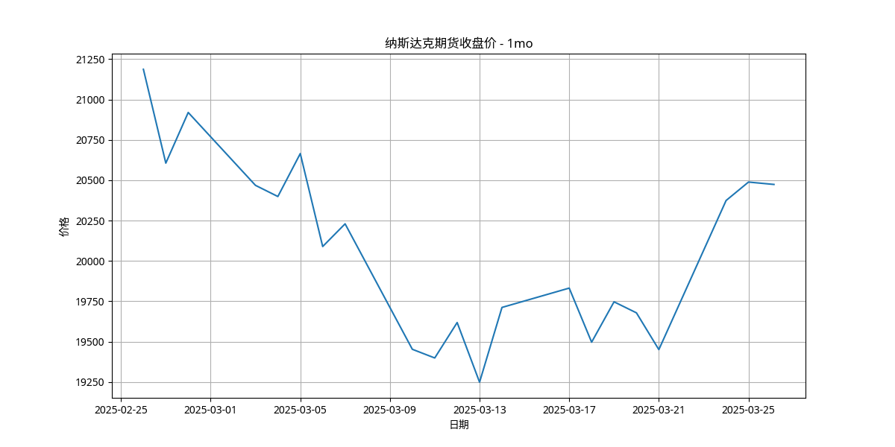
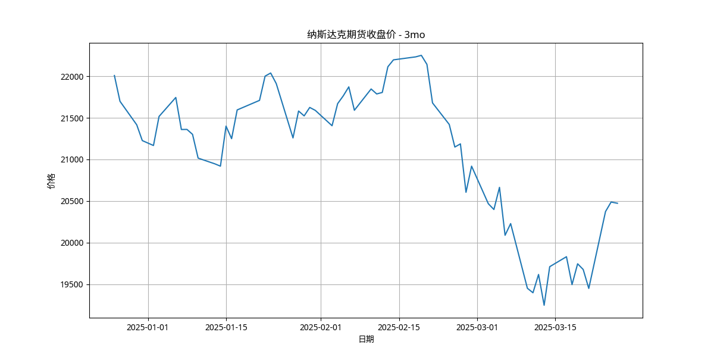

市场概况
纳斯达克期货作为全球科技股的重要风向标，其走势不仅反映了科技行业的发展状况，也在很大程度上影响着全球金融市场的整体情绪。
截至2025年3月26日，纳斯达克期货(NQ=F)的最新收盘价为20473.75点，较前一交易日小幅下跌0.01%。从东方财富网的报道来看，在3月25日纽约尾盘，纳斯达克100股指期货上涨0.64%，表明市场情绪相对积极，科技股表现较好。
纳斯达克期货价格具有高波动性、对消息敏感、与全球市场联动以及季节性波动等特点。年化波动率高达44.13%，表明市场波动较大，投资者需要谨慎应对可能的剧烈价格变动。
纳斯达克期货价格波动特点
1. 高波动性
纳斯达克市场中的科技股通常具有较高的成长潜力，但也伴随着较大的不确定性，这导致期货价格波动较为剧烈。年化波动率高达44.13%，表明市场波动较大。
2. 对消息敏感
无论是宏观经济数据的发布，还是科技行业的重大创新或负面消息，都可能迅速引发期货价格的大幅波动。投资者应密切关注市场消息，及时调整策略。
3. 与全球市场联动
在全球化的金融市场中，纳斯达克期货价格与其他主要市场，如道琼斯指数、标普500指数等，存在一定的联动关系。全球市场的波动可能会传导至纳斯达克期货。
4. 季节性波动
某些时期，如财报季、节假日等，可能会出现较为明显的价格波动规律。即将到来的财报季可能会引发市场波动。
纳斯达克期货近期走势
纳斯达克期货1个月走势图
纳斯达克期货3个月走势图
关键数据摘要
- 当前收盘价: 20473.75点
- 日涨跌幅: -0.01%
- 年化波动率: 44.13%
- 1年内最高价: 22196.25点 (2025年2月10日)
- 1年内最低价: 17180.75点 (2024年4月15日)
- 从最低点涨幅: 19.17%
- 从最高点跌幅: -7.76%